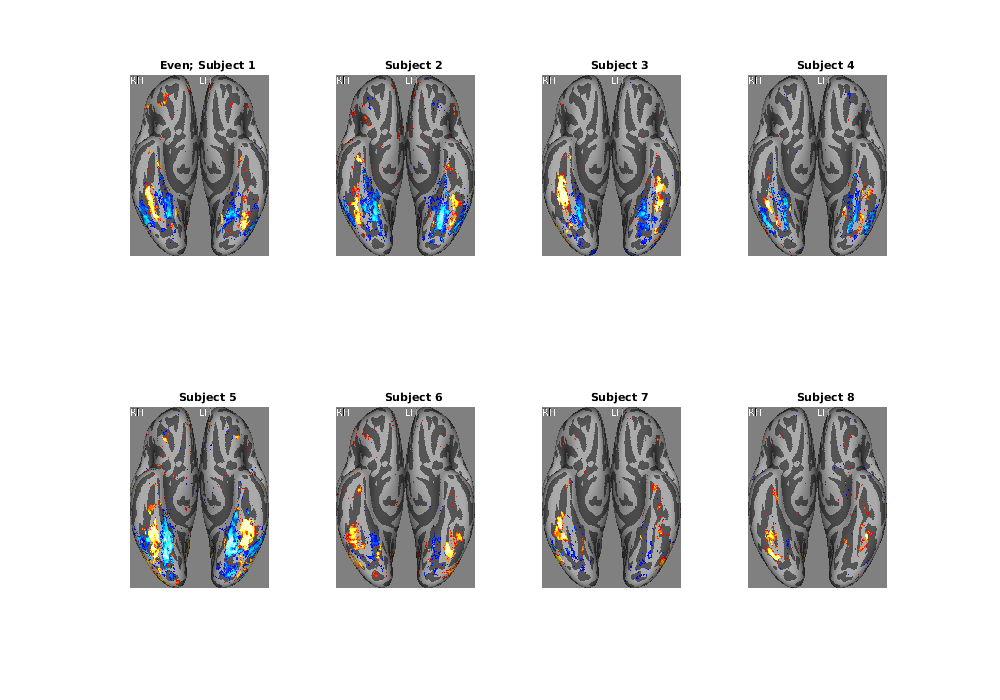

Example 7: A simple contrast-based analysis of the NSD betas
Contents
Introduction
% In this script, we demonstrate a simple analysis of the NSD betas. The analysis % is based on the actual content of the NSD images --- specifically, we make use of % face annotations that were generated as part of "NSD_Annotation_Efforts_1.0", % which is an extension to the NSD data (it is not officially part of the % prepared NSD data). The analysis itself is very simple (essentially just a % t-test), but this script goes through a number of important points. % % Skills/concepts: % - Memory management % - Resampling strategies (split-half, shuffle/permutation) % - Using line plots to better understand cortical map visualizations
General setup
% define expfile = '~/nsd/nsddata/experiments/nsd/nsd_expdesign.mat'; nsess = 2; % how many of the first N NSD sessions to consider (must be >= 2) betaver = 'betas_fithrf'; % which beta version to load % load exp1 = load(expfile);
Load face annotations
% load automated outputs: simple face count a1 = load('~/Dropbox/nsdabudhabi/nsdextensions/NSD_Annotation_Efforts_1.0/Automated/Faces/regcount_mode1.mat');
Load betas prepared in fsaverage space and analyze them
% The large scale of the NSD data comes with pain points. One is memory usage. % Unless you have large amounts of RAM, it may be impossible to hold all of % the relevant data in RAM at a single time. Thus, one may need to analyze % the data in chunks. In this script, we will process each subject one at a % time and only keep in RAM the relevant analysis outputs (not the data). % % Designing code to handle memory well is not trivial. One must have a birds-eye % perspective on the architecture of the analysis, the memory usage, and the % exact quantities that need to be computed. One wants to make sure that all % of the necessary analysis outputs are computed before one gets rid of the % data to make room for new edata. Since loading data from disk is expensive % in terms of execution time, ideally, code would be written correctly up front. % loop over subjects tvals = single([]); % vertices x 4 x subjects (full, odd, even, shuffle) mns = single([]); % vertices x 2 x subjects (face, non-face) ses = single([]); % vertices x 2 x subjects (face, non-face) for subjix=1:8, subjix % load in all of the betas alldata = single([]); % 327684 vertices x 750 trials x sessions for sess=1:nsess fprintf('sess%d...',sess); file0 = sprintf('~/nsd/nsddata_betas/ppdata/subj%02d/fsaverage/%s/*.betas_session%02d.*',subjix,betaver,sess); data = cvnloadmgz(file0); % 327684 x 1 x 1 x 750 alldata(:,:,sess) = single(permute(data,[1 4 2 3])); % use single to save on memory clear data; end % at this point, the betas are in units of percent signal change. % to deal with gross session differences, you may want to consider % z-scoring the betas from each session (on a per-voxel basis). % prepare face counts (750 trials x sessions, non-negative integers) imageix = exp1.subjectim(subjix,exp1.masterordering(1:750*nsess)); % 1 x trials with 73k IDs counts = a1.countval(imageix); % 1 x trials with face counts counts = reshape(counts,750,[]); % 750 trials x sessions % compute t-value for faces vs. non-faces counts0 = counts; [mn1,se1] = meanandse(alldata(:,flatten(counts)>0),2); % at least one face [mn2,se2] = meanandse(alldata(:,flatten(counts)==0),2); % no faces tvals(:,1,subjix) = (mn1 - mn2) ./ sqrt(se1.^2 + se2.^2); % we also save the means and std errs for this case mns(:,1,subjix) = mn1; mns(:,2,subjix) = mn2; ses(:,1,subjix) = se1; ses(:,2,subjix) = se2; % compute t-value for odd sessions counts0 = counts; counts0(:,2:2:end) = NaN; % set even sessions to NaNs (the NaNs will not satisfy the logical operators) [mn1,se1] = meanandse(alldata(:,flatten(counts0)>0),2); % at least one face [mn2,se2] = meanandse(alldata(:,flatten(counts0)==0),2); % no faces tvals(:,2,subjix) = (mn1 - mn2) ./ sqrt(se1.^2 + se2.^2); % compute t-value for even sessions counts0 = counts; counts0(:,1:2:end) = NaN; % set odd sessions to NaNs (the NaNs will not satisfy the logical operators) [mn1,se1] = meanandse(alldata(:,flatten(counts0)>0),2); % at least one face [mn2,se2] = meanandse(alldata(:,flatten(counts0)==0),2); % no faces tvals(:,3,subjix) = (mn1 - mn2) ./ sqrt(se1.^2 + se2.^2); % shuffle labels and re-analyze for shuffle=1:1 % here, we do just one, but one can adapt this to do many counts0 = permutedim(counts,0); [mn1,se1] = meanandse(alldata(:,flatten(counts0)>0),2); % at least one face [mn2,se2] = meanandse(alldata(:,flatten(counts0)==0),2); % no faces tvals(:,3+shuffle,subjix) = (mn1 - mn2) ./ sqrt(se1.^2 + se2.^2); end end
subjix =
1
sess1...sess2...
subjix =
2
sess1...sess2...
subjix =
3
sess1...sess2...
subjix =
4
sess1...sess2...
subjix =
5
sess1...sess2...
subjix =
6
sess1...sess2...
subjix =
7
sess1...sess2...
subjix =
8
sess1...sess2...Generate cortical map visualizations
% loop through each of the 4 analysis results (full, odd, even, shuffle) Lookup = []; titlestr = {'All' 'Odd' 'Even' 'Shuffle'}; for typ=1:size(tvals,2) figureprep([0 0 1000 700],1); for subjix=1:8 % use ventral inflated view of fsaverage; range -10 to 10; % threshold values that are less than 3 and greater than -3 [rawimg,Lookup,rgbimg] = cvnlookup('fsaverage',3,tvals(:,typ,subjix),[-10 10],cmapsign4(256),3*j,Lookup,0); % write image to disk imwrite(rgbimg,sprintf('facetval_typ%02d_subj%02d.png',typ,subjix)); % also place into figure window subplot(2,4,subjix); hold on; imshow(rgbimg); if subjix==1 title(sprintf('%s; Subject %d',titlestr{typ},subjix)); else title(sprintf('Subject %d',subjix)); end end end
% Notice that even though the subjects are in fsaverage space, there is % substantial variability in the location of face-selective cortex.
% Notice that there is high consistency across the Odd and Even analyses.
% Notice that the shuffle analysis produces very few statistically significant % regions (this is good). The null hypothesis embodied by this analysis is that % there is no relationship between the faces vs. non-faces categorization and the % brain data. The shuffling analysis has the nice property that it is closely % matched to the actual empirical data (it has the same exact numerical values; % the order is simply scrambled). % % The visualization is thresholded at |t|>3, and under this threshold, % there are still a few false positives that occur. Note that one could do % more extensive NHST quantification, such as performing many shuffles and % calculating some metric of the results (e.g. number of vertices that achieve % significance). Also, note that the issues here are closely related to % family-wise error rate and false discovery rate, but we won't go into % those issues here.
Use line plots to better understand the cortical maps
% plot the Full result, averaged across subjects [rawimg,Lookup,rgbimg] = cvnlookup('fsaverage',3,mean(tvals(:,1,:),3),[-10 10],cmapsign4(256),3*j,Lookup,0); % put up the image hmapfig = figure; himg = imshow(rgbimg);
Warning: Image is too big to fit on screen; displaying at 67%
% draw a line on the right hemisphere from left to right, % through the middle of the large yellow region if 0 % ask the user to draw a line (green=start, red=end) xypoints = []; % Note: can provide initial xypoints as Nx2 matrix of pixel coords [xypoints,xyline] = roiline(hmapfig,[],xypoints); % we now have: % xypoints = Nx2 pixel coords of line segment endpoints that the user defined/clicked (decimal) % xyline = Vx2 pixel coords of ALL pixel centers along the defined line segments (integer) end % to allow automated execution, we embed the above code in an if-statement % and provide the following hard-coded values: xypoints = [75.7499999999999 668.75;146.25 658.25]; xyline = [76 669;77 669;78 668;79 668;80 668;81 668;82 668;83 668;84 667;85 667;86 667;87 667;88 667;89 667;90 667;91 666;92 666;93 666;94 666;95 666;96 666;97 666;98 665;99 665;100 665;101 665;102 665;103 665;104 665;105 664;106 664;107 664;108 664;109 664;110 664;111 663;112 663;113 663;114 663;115 663;116 663;117 663;118 662;119 662;120 662;121 662;122 662;123 662;124 662;125 661;126 661;127 661;128 661;129 661;130 661;131 660;132 660;133 660;134 660;135 660;136 660;137 660;138 659;139 659;140 659;141 659;142 659;143 659;144 659;145 658]; % convert pixel coords (xyline) to vertex indices via Lookup. % each pixel center is mapped to a single surface vertex (via nearest-neighbor). % vertidx = Vx1 vertex indices (between 1 and numlh+numrh) vertidx = spherelookup_imagexy2vertidx(xyline,Lookup); % remove repeating vertices vertidxU = filterout(removerepeats(vertidx),NaN); % let's check the location of these vertices cvnlookup('fsaverage',3,copymatrix(zeros(size(tvals,1),1),vertidxU,1),[0 1],gray,0.5,Lookup);
Warning: Image is too big to fit on screen; displaying at 67%
% plot some data values along the line (we call this a "line profile"). % keep in mind that the line is not necessarily exactly straight, given % that it is constrained to be a series of fsaverage vertices. subjix = 1; % for simplicity, we will show only subj01 figure; subplot(2,1,1); hold on; plot(tvals(vertidxU,1,subjix),'ro-'); straightline(0,'h','k-'); xlabel('Vertex'); ylabel('t-value'); subplot(2,1,2); hold on; errorbar3(1:length(vertidxU),mns(vertidxU,1,subjix)',ses(vertidxU,1,subjix)','v',[1 .5 .5]); errorbar3(1:length(vertidxU),mns(vertidxU,2,subjix)',ses(vertidxU,2,subjix)','v',[.5 .5 1]); plot(mns(vertidxU,1,subjix),'r-','LineWidth',2); plot(mns(vertidxU,2,subjix),'b-','LineWidth',2); straightline(0,'h','k-'); xlabel('Vertex'); ylabel('BOLD (%)'); % We leave it as an exercise for the reader to explore: % (1) expressing cortical distance in mm units % (2) plotting multiple subjects on a single figure % (3) summarizing results across subjects